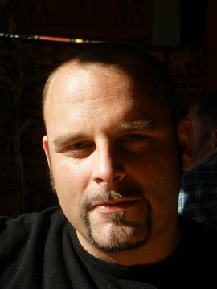
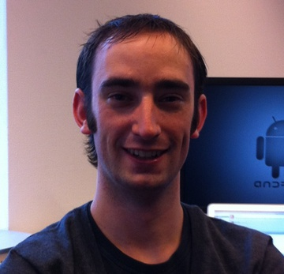
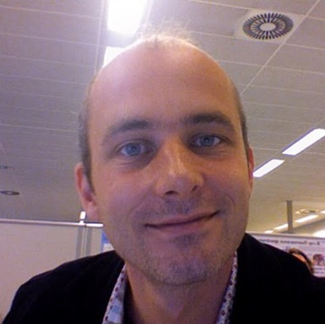

Android Tablet Development
Introduction
Designing and developing for an Android tablet is very different to designing and developing for smartphones. Tablets allow us to exercise our primal urge to move things around with our hands. They are predominantly used at home in the evenings and it’s likely that you will be focused on a particular task. This differs from smart phones where we often have lots going on at once and dip in and out of apps as we go. This meetup will provide a look into the development of Android Tablets.
Schedule
- 16:30 – 17:00 Walk-in
- 17:00 – 17:10 Opening and welcome
- 17:10 – 17:20 General announcements
- 17:20 – 18:00 “Designing for Android Tablet” (Wiebe Elsinga)
- 18:00 – 19:00 Dinner
- 19:00 – 19:40 “Coding the Tablet” (Coen Houtman)
- 19:40 – 20:00 Coffee break
- 20:00 – 20:40 “Live demo: how to connect your fragments to cloud-based REST services” (Dennis Geurts)
- 20:40 – 21:30 “Barcamp”
Wiebe Elsinga
 Is currently a Technical Lead at the mobile department of Itude. He has a long time experience in software development of mobile, web and enterprise applications. He is mainly focused on the development of mobile applications, and is continuously seeking quality improvements within the development process of mobile applications. Besides being a co-organizer of the Dutch Android Usergroup he is also a public speaker at technical conferences worldwide.
Coen Houtman
 Started his study “computer science” in 2004 to become a software engineer. During his study he was able to gain experience with a variety of programming languages, including: C, C++ and C#. Most classes, however, were built around Java. In 2008 he started working at Itude, where soon after, he joined the mobile department. After working on various mobile projects, he started out on his first Android project in 2010. Since then, he helped building complex Android applications for both smartphones and tablets. In fact, he was responsible for redesigning smartphone applications to make them suitable for tablets.
Dennis Geurts
 Is an experienced software engineer at Luminis. He loves programming for mobile devices (mostly Android, but also for iPhone/iPad) but is also well-versed in OSGi and Java in general. He’s also interested in node.js and noSQL (CouchDB and Redis are his favorites).